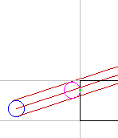
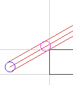
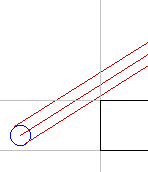

IntersectCircleBox.h
The circle in its initial position is drawn in blue. The path of the circle is drawn in brown. The paths of the center and the two extreme points in the direction perpendicular to motion are shown. The solid black lines are the left side of a rectangle. The light gray lines just shows how the rectangle partitions space. The magenta circle shows the final configuration of the circle when it just touches the rectangle. The first point of contact is drawn in green. The application allows you to grab with the mouse the region bounded by the brown lines, then drag them to change the path of motion. The left image shows a typical configuration. The middle image shows what happens when the circle will graze a corner of the rectangle. The right image shows that the circle misses the rectangle.
|  |  |  |